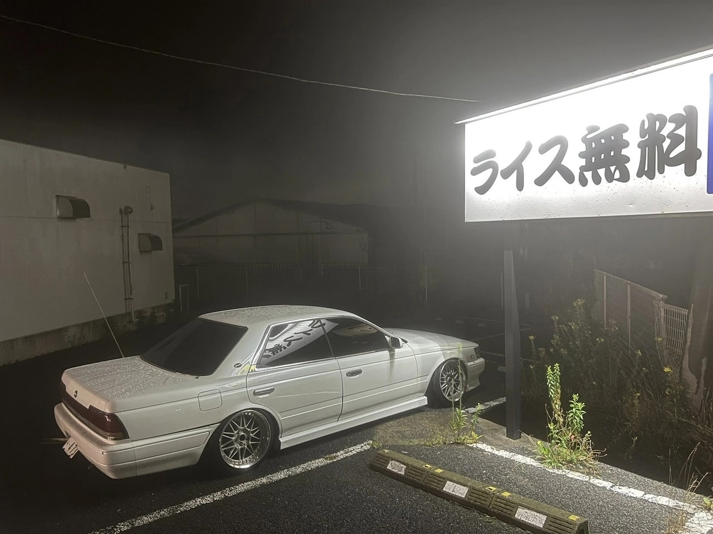
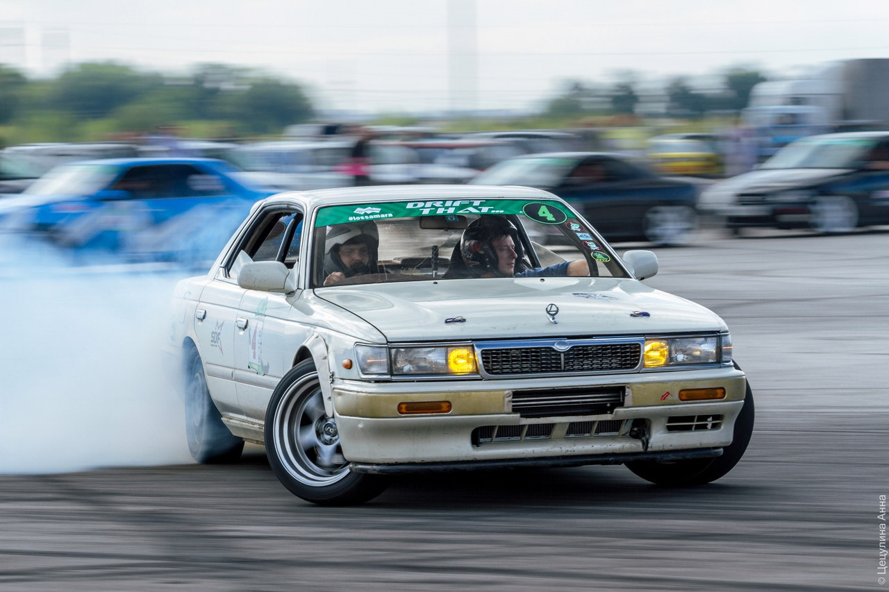

Что его выделяет?
Laurel в модельном ряду Nissan всегда выступал на «подтанцовке». Несмотря на то, что долгое время предлагался и как седан, и как купе, оставался в тени более специализированных моделей. Skyline был спортивнее. Cedric/Gloria богаче комплектовались и в принципе относились к иному классу. Наконец, присутствовала в линейке «двухдверка» Silvia, также отвечавшая за «спорт и драйв». К концу 80-х ситуация обострилась — на сцену вышел седан Cefiro, тогда, как известно, еще классической компоновки, построенный на общей с Laurel C33 платформе.
А также этот автомобиль любят за то, что он является билетом в дрифт, так как платформа очень хорошая, а цены на детали не сильно бьют по карману
P.S.
Если тебя зинтересовал этот автомобиль, то кликай на пикчу ниже, чтобы увидеть мой автообзр на Nissn Laurel c33